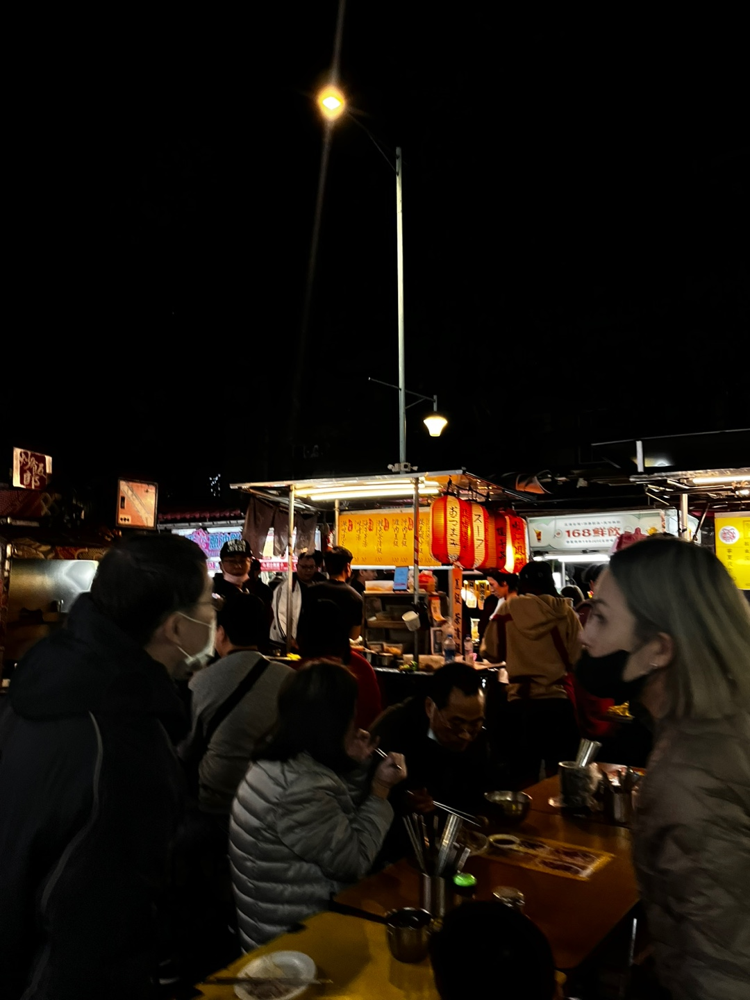

영국 밴드 Sting의 Englishman in New York의 후렴구 일부이다. 외계인은 또 다른 말로 이방인, 체류자로 의 역할 수 있다. 노래의 가사를 인용하며 내가 대만의 외계인이 되었던 겨울 방학의 여행을 공유해 본다.
나는 여행을 하나의 이방인이 되는 과정이라 생각한다. 나를 아무것도 모르는 사람들로 가득한 나도 아무것도 모르는 세계에 떨어지는, 미지와의 직면은 늘 무서운 일로 생각되곤 한다. 하지만 나는 그 일로부터 묘한 해방감 을 느낀다. 어떤 책임도 나를 묶어 두지 않은 채 오롯이 단신으로 설 수 있는 일이 일상에서의 자유라고 생각되 기 때문이다. 해서 나는 익숙한 것들로 가득한 도시보다야 낯선 곳으로 가득한 오지나 먼 곳으로의 여행을 늘 꿈꾸고 선호하긴 했다.
이번 여행의 계획에 있어서도 그런 곳을 제안했다만, 거절당했다. 미지에서 겪을 수 있는 자유는 곧 혼자가 된다 는 이야기기도 하다. 자유라는 것은 굉장히 멋지고 상쾌한 일이지만 사실은 상상 이상으로 외롭고 고통스러운 일이다. 아무것도 모르는 곳에서 도사린 아나콘다의 위험을 감수하며 정글로 떠나고 싶은 사람은 타잔이 아닌 이상 잘 없다. 나는 일본으로 가자는 이야기를 반대하는 것이 고작이었다.
대만은 비교적 문화에 있어 큰 차이가 없는 국가이기는 하다. 사람들이 생긴 것도 큰 차이가 없고, 한자가 크게 낯선 언어도 아니며, 일식을 어디에서나 먹을 수 있다는 점이 유난히도 그렇다. 다만 일본보다 이국적인 풍토를 느낄 수 있는 점이 있었다. 대만은 중국과 동남아시아의 사이에 위치한 섬 나라로 기후를 따지자면 동남아의 기 후를 공유하는 경향이 있다. 때문에 큰 문화의 틀은 중화권을 따르지만, 그것이 동남아시아의 풍토로 빚어진 느 낌이다. 모두가 오토바이를 타고 다니고, 비를 막기 위한 그늘진 통로를 전부 만든다. 물 대신 모두가 차를 마시 는 이 곳, 일단 한국은 확실히 아니다.
 나는 일단 한국이 아니지만, 어쩐지 모르게 익숙한 그 곳에서 대화를 시도하자마자 완전히 동떨어졌다. 유명한 관광지를 벗어나자 누구도 영어를 쓰지 않는다. 택시를 타는 것 만으로도 굉장한 사투가 필요했다. 회의 때문에 혼자 떨어져 일행과 합류해야 했던 날도 있었는데, 정말 지구에 불시착한 외계인이 된 기분이었다. 야시장을 향해 가는 길 위에서, 난 핸드폰을 들고 친구들에게 "더 놀다가 오셈! 나는 걸어가겠음"이라는 텍스트를 보냈고 버스를 타기보다 모르는 길을 한시간 걸어 가기 시작했다.
어쩐지 모르게 익숙한 분위기, 별 반 다르게 생기지도 않은 사람들, 지구 어디에서나 볼 수 있는 자동차나, 드문 드문 낯 익었던 한자 사이에서 언어 하나만이 통하지 않는다. 라는 이유만으로도 나는 얼마나 자유로워질 수 있었는지! 아무도 나를 탓하지 않고 아무도 나에게 관여하지 않는다. 아무도 나를 몰랐다. 단칸방에서의 차디 찬 외로움과는 다르게 달가운 외로움이다.
무겁고 익숙한 것들로 가득한 곳에서 산다는 것은 내가 아닌 것으로 채워지는 나의 부분이 많아지는 일 같다. 그래서 나는 언젠가 영영 세상을 떠돌며 한없이 자유롭고 외로운 외계인이 되고 싶다.